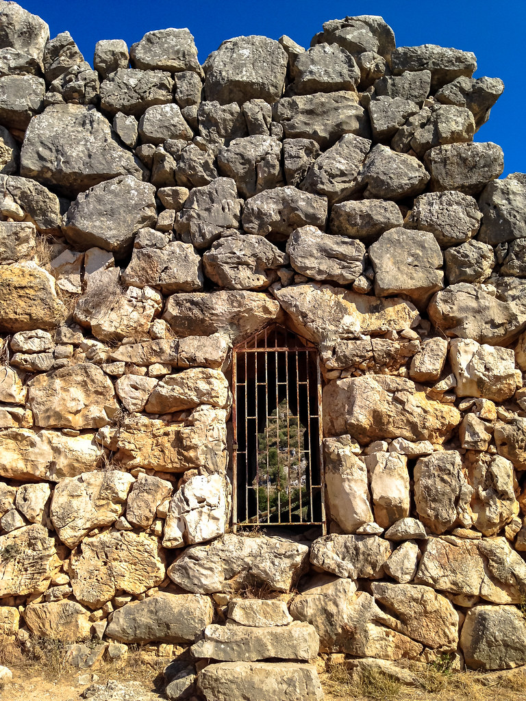
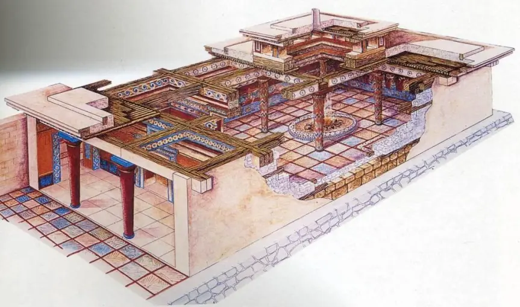
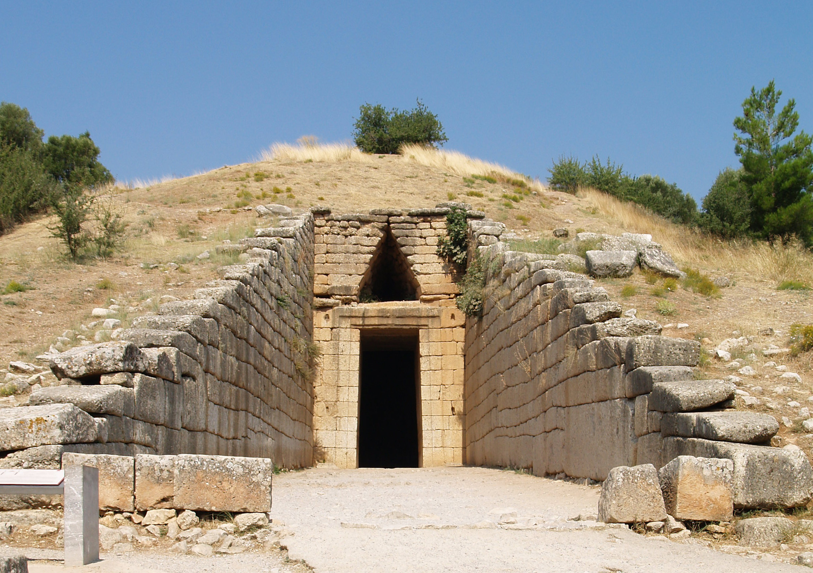

GCSE Classical Civilisation · The Homeric World · 1.2 · Revision
Mycenae
The richest and most heavily fortified of the Mycenaean citadels — its setting, its walls and Lion Gate, its palace, cistern and tombs, and what they tell us. A prescribed site.
Mycenae
At a glance
The citadel today · a hilltop commanding the Argive plainGroundplan · walls, Lion Gate, palace, Grave Circle A and cistern
Key facts
Type: a fortified, palace-centred citadel — the leading centre of the Mycenaean world
Built: roughly the 17th to 11th century BC, at its height c.1350–1200 BC
Location: a hilltop in the northeast Peloponnese, commanding the Argive plain and the routes across it
Materials: limestone, with shinier conglomerate used for show
Rediscovered: excavated by Heinrich Schliemann in 1876, who opened the shaft graves of Grave Circle A
Significance: gives the whole age its name, and is famous for its walls, gate, frescoes, tombs and treasure
Why it matters
the richest and most heavily fortified of the sites, and the benchmark the others are measured against
Homer calls it “rich in gold” (Iliad 11.25), and the gold from the graves bears that out
its commanding position controlled the plain below, which helps explain its power
abandoned around 1200–1100 BC as the wider Bronze Age world collapsed
Around the citadel
The walls, the gate, the palace, the water and the tombs
Cyclopean walls — unmortared blocks of c.2 tonnes
The Cyclopean walls
The huge defensive wall ringing the citadel, built to keep attackers out.
about 900m around by 1200 BC, 5.5–7.5m thick and around 12m high
unmortared limestone blocks of about two tonnes each, a rubble core behind a facing of large blocks, moved on rollers and up earth ramps and built to follow the hill
so massive that later Greeks could not believe humans had raised them: the traveller Pausanias records the tradition that the one-eyed Cyclopes built them, which is where “Cyclopean” comes from
The Lion Gate — two lions over the relieving triangle
The Lion Gate
The monumental main gateway, and a statement of the rulers' power to anyone approaching.
built in the 13th century at the city's height, framed in shiny conglomerate to set it apart
a roughly 3m square opening with a 20-tonne lintel; above it a corbelled “relieving triangle” diverts the weight of the wall off the lintel
the triangle holds the earliest monumental sculpture on the Greek mainland: two facing lions (their heads, now lost, were carved separately and probably turned to meet the visitor) flanking a Minoan-style column that may stand for the palace or its protecting deity
the approach itself was a killing zone: a bastion on the right of the path narrowed it and turned attackers' unshielded right side to the wall, so defenders above could strike them as they neared the gate
the only other way in was the smaller northern, or Postern, gate

The South Sally Port — a narrow postern through the wall
The sally ports
Small, concealed gaps in the wall that let defenders dash out to surprise besiegers, then slip back inside.
“to sally” is to make a sudden rush out; the port gave a hidden exit to strike at enemy troops camped outside the walls
there were two, one north and one south
the southern one is visible from a distance and only about 2.5m wide, so its value as a surprise is debatable

The palace summit — the megaron's great hall at its core
The palace and its megaron
The ruler's residence and the administrative heart of the city, set at the highest, most commanding point.
the uneven ground was artificially levelled, with storage terraces down the sides
at its core was the megaron, a great hall with a central hearth and a throne, its walls once bright with frescoes — in effect the ruler's throne room
The cistern passage, descending under the wall
The underground cistern
A hidden water tank that kept the city supplied if it was besieged and cut off from its spring.
a passage runs from the northern sally port, under the wall, down to a tank about 18m below ground
fed by clay pipes from a spring outside the walls, so the Mycenaeans could still draw water under siege and hold out
roofed by corbelling, laying ever-larger blocks until they meet at the top
Grave Circle A, re-walled inside the citadel
The grave circles
Royal burial grounds, ringed by a low stone wall, where rulers and their families were buried with rich treasure.
Grave Circle A sits inside the walls, re-walled and regraded when the Lion Gate went up so it stood grandly within the citadel; Schliemann dug it in 1876
Grave Circle B is older and lies about 200m outside the walls
full contents come under Topic 4 (Tombs, Graves and Burial)

The Treasury of Atreus — the great corbelled dome
The tholos tombs
Monumental “beehive” tombs — tall domed stone chambers reached by a long passage, built for the elite outside the walls.
the finest is the Treasury of Atreus, also called the Tomb of Agamemnon, whose corbelled dome was the largest of its kind in the ancient world for around a thousand years
the so-called Tombs of Clytemnestra and Aegisthus belong to the same family, built around the 14th century BC
One site, every Mycenaean preoccupation in stone: defence in the walls, display at the gate, administration in the palace, survival in the cistern, and status in the tombs.
Significance & interpretation
What the site shows, and how far to trust it
A show of power
the walls and Lion Gate are defence and display at once: the 12m circuit and 20-tonne lintel keep enemies out, but their sheer size is also meant to impress anyone approaching
the lions stand over the gate where every visitor had to pass — the earliest monumental sculpture on the mainland, placed so that the rulers' power was the first thing a visitor saw
when the walls were extended around 1250 BC, Grave Circle A was brought inside them and given a grand new ring of stone — the ruling family kept its ancestors inside the citadel to strengthen its claim to rule
the hidden cistern and the sally ports show the same rulers ready for a siege — rich and confident, but also worried about attack
Almost every feature works on two levels at once: it is practical, and it also shows off the power of the rulers. The citadel was built not just to be strong, but to impress.
Mycenae and Homerthe key debate
For a link: the site shows a real, wealthy, war-loving society ruled by powerful kings from a great citadel — just the world the poems look back on — and Homer's phrase “rich in gold” is matched by the gold from the graves
Against a close fit: Homer composed around the 8th century, about four hundred years after the palaces fell and in a poorer age; his heroes know nothing of the Linear B palace records, and they are cremated, while the kings of the shaft graves were buried
in many ways the world of the poems looks like a later, poorer age than the one the remains reveal
So the site shows that a great, lost age really existed for Homer to look back on — but not that the events he describes, or the everyday details, are true. It supports the poems in broad outline, not in their detail.
How useful is the site as evidence?
Strong on power, wealth and war: the walls, the gateway built to impress, the gold-filled graves and the labour needed to move such stones all show the strength of the elite
Weak on ordinary life: the poor, women, work and religion leave little trace, and because stone and gold survive while wood, cloth and food rot away, the picture leans towards the grand and the lasting
Be careful with the famous names: they come from later myth, not evidence — Schliemann dug with Homer in hand and named the “Mask of Agamemnon”, while the “Treasury of Atreus” and “Tomb of Clytemnestra” are old traditional names; none proves who was buried there, and the dating is only rough
How useful it is depends on the question. For the wealth and power of the rulers the site is excellent evidence; for daily life and religion it tells us much less — and the legendary names have to be set aside before we can judge what the remains really show.
Why Mycenae matters most
it is the fullest and richest of the sites, so it sets the standard against which Tiryns and Troy are judged
it gives the whole civilisation its name, and its commanding position over the Argive plain helps explain why it led the rest
it was abandoned around 1200–1100 BC, so it is evidence not just for the height of this world but for its collapse — the gap that left Mycenae as a place later Greeks could only imagine
Exam focus
Practice questions — from short answers to the extended response
Short answer & explain
Describe two features of the defences at Mycenae. [short answer]
Explain how the design of the Lion Gate showed the power of Mycenae's rulers. [explain]
Source usefulness
How useful is the site of Mycenae for understanding the wealth and power of Mycenaean society? [source usefulness]
Extended response · how far do you agree
“The remains at Mycenae tell us more about power than about everyday life.” How far do you agree? [extended response]
Flashcards
6 cards — click to flip, use arrows to move through